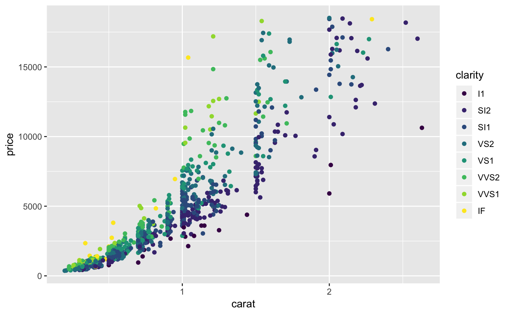
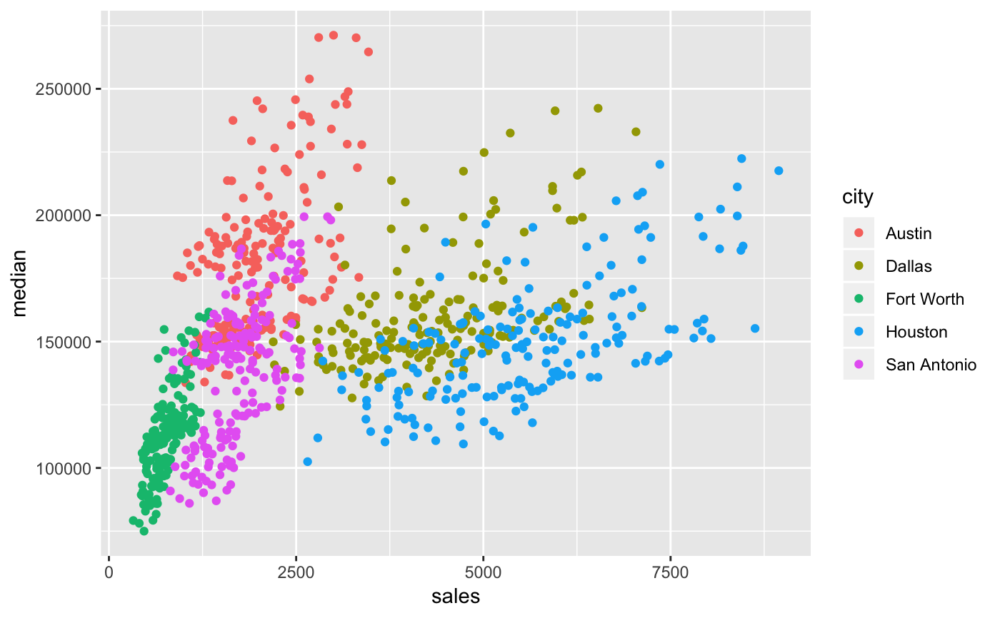
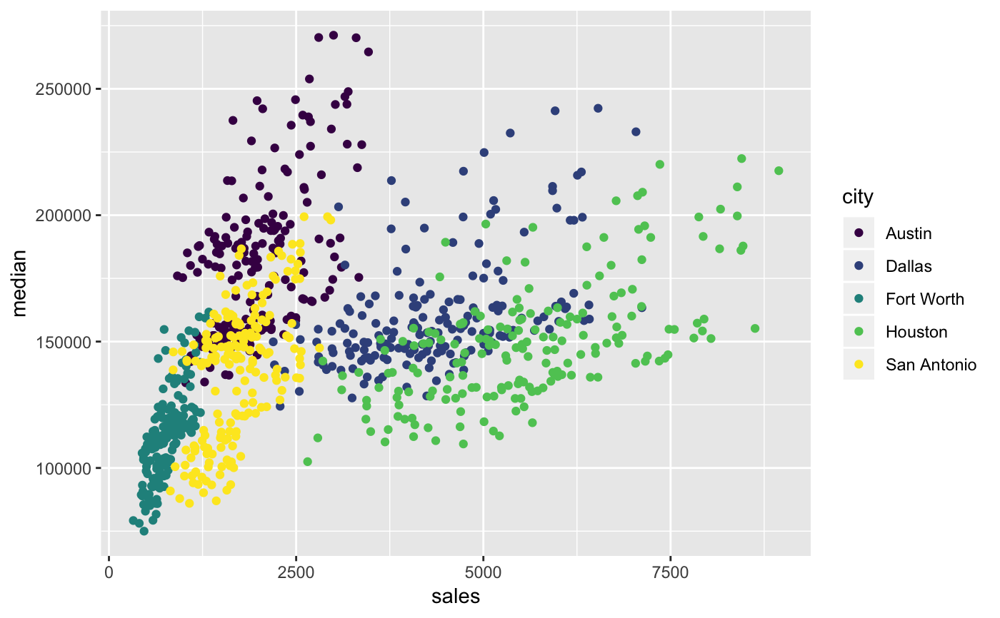
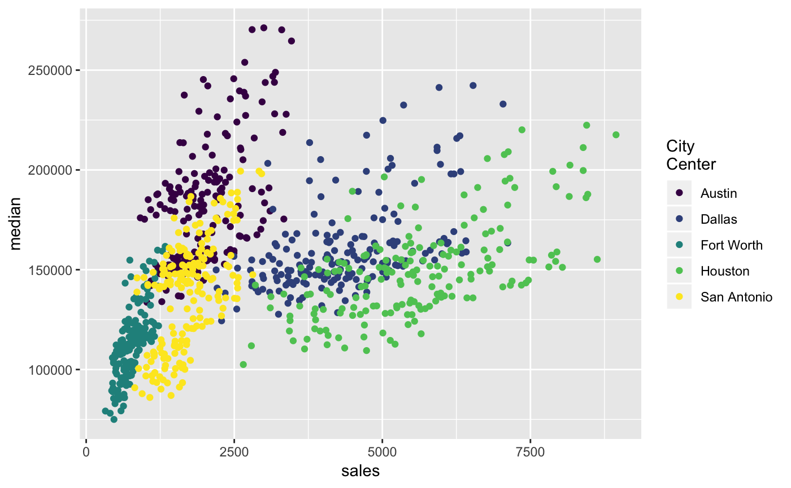
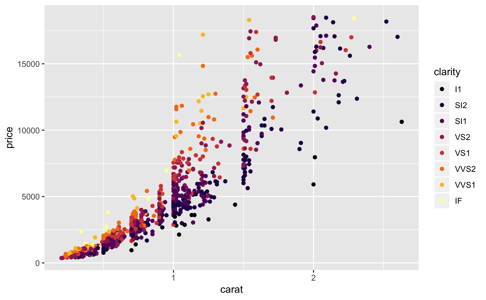
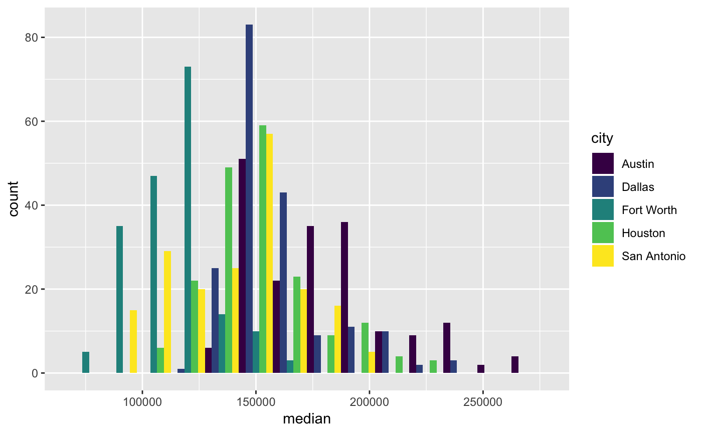
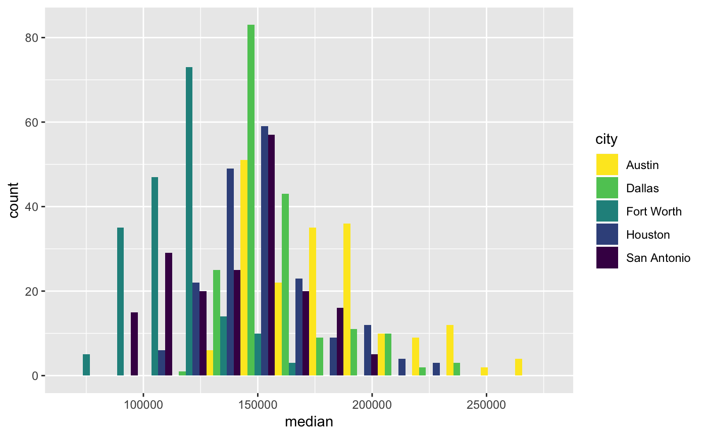
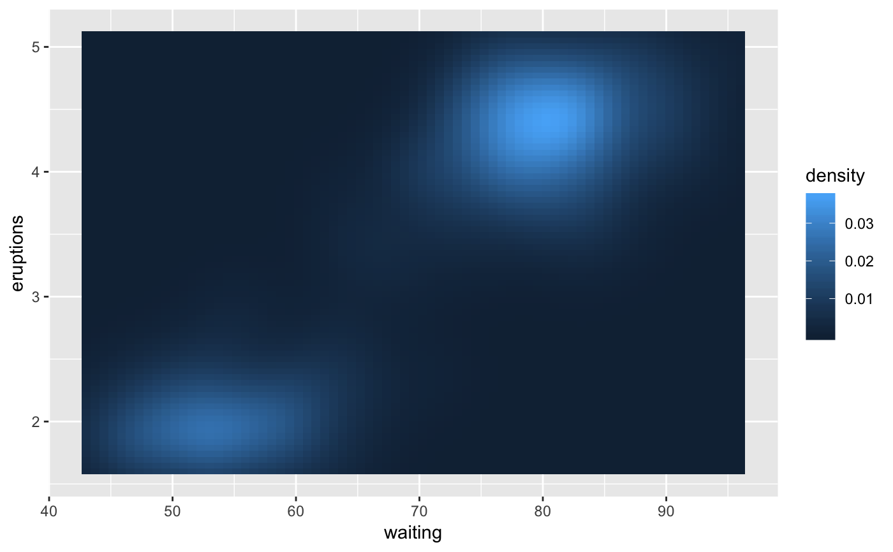
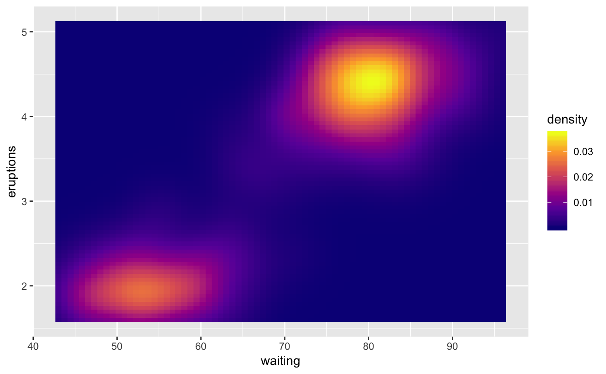

The viridis scales provide color maps that are perceptually uniform in both
color and black-and-white. They are also designed to be perceived by viewers
with common forms of color blindness. See also
https://bids.github.io/colormap/.
scale_colour_viridis_d(..., alpha = 1, begin = 0, end = 1, direction = 1, option = "D") scale_fill_viridis_d(..., alpha = 1, begin = 0, end = 1, direction = 1, option = "D") scale_colour_viridis_c(..., alpha = 1, begin = 0, end = 1, direction = 1, option = "D", values = NULL, space = "Lab", na.value = "grey50", guide = "colourbar") scale_fill_viridis_c(..., alpha = 1, begin = 0, end = 1, direction = 1, option = "D", values = NULL, space = "Lab", na.value = "grey50", guide = "colourbar")
Arguments
| ... | Other arguments passed on to |
|---|---|
| alpha | The alpha transparency, a number in [0,1], see argument alpha in
|
| begin | The (corrected) hue in [0,1] at which the viridis colormap begins. |
| end | The (corrected) hue in [0,1] at which the viridis colormap ends. |
| direction | Sets the order of colors in the scale. If 1, the default, colors are ordered from darkest to lightest. If -1, the order of colors is reversed. |
| option | A character string indicating the colormap option to use. Four options are available: "magma" (or "A"), "inferno" (or "B"), "plasma" (or "C"), "viridis" (or "D", the default option) and "cividis" (or "E"). |
| values | if colours should not be evenly positioned along the gradient
this vector gives the position (between 0 and 1) for each colour in the
|
| space | colour space in which to calculate gradient. Must be "Lab" - other values are deprecated. |
| na.value | Missing values will be replaced with this value. |
| guide | A function used to create a guide or its name. See
|
See also
Other colour scales: scale_alpha,
scale_colour_brewer,
scale_colour_gradient,
scale_colour_grey,
scale_colour_hue
Examples
dsamp <- diamonds[sample(nrow(diamonds), 1000), ] (d <- ggplot(dsamp, aes(carat, price)) + geom_point(aes(colour = clarity)))d + scale_colour_viridis_d()# Change scale label d + scale_colour_viridis_d("Diamond\nclarity")# Select palette to use, see ?scales::viridis_pal for more details d + scale_colour_viridis_d(option = "plasma")d + scale_colour_viridis_d(option = "inferno")# scale_fill_viridis_d works just the same as # scale_colour_viridis_d but for fill colours p <- ggplot(diamonds, aes(x = price, fill = cut)) + geom_histogram(position = "dodge", binwidth = 1000) p + scale_fill_viridis_d()# the order of colour can be reversed p + scale_fill_viridis_d(direction = -1)# Use viridis_c with continous data v <- ggplot(faithfuld) + geom_tile(aes(waiting, eruptions, fill = density)) vv + scale_fill_viridis_c()v + scale_fill_viridis_c(option = "plasma")